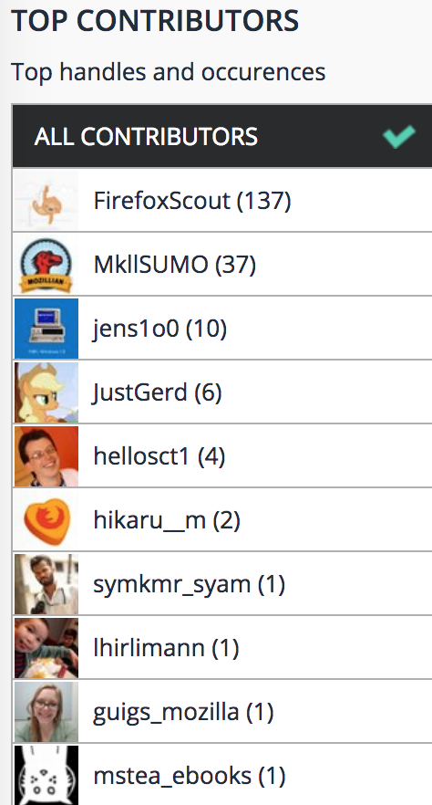

Hello,
Mozilla Social Support!
This month there have been some exciting updates. Firefox 60 has launched, we had a SUMO Day, and the community has planned many events for the Global Sprint for helping out with Google PlayStore Reviews. Check out how to get involved.
Cool News this week!
*There is a new mobile app*
Do you have an iOS device? You can now reply to Firefox users from your mobile device.
Download it Today
*A New Bridged Chat Channel*
SLack and Telegram, Telegram and IRC, but not irc and slack. Bridging the gap on communication!
Metrics for May 2018
How would you describe the health of the community?
What languages?
Aside from english we support czech, dutch, french, spanish, portuguese, german, bengali, and some russian and japanese tweets.
How much did we support?
Volume by Language
How many replies In Reply?
How many replies #fxhelp?
How many are we?
May 10 to May 31 we grew!
Casual Contributors 10
